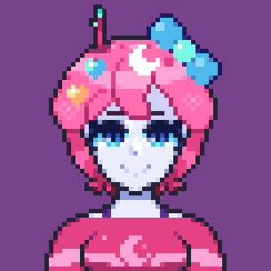
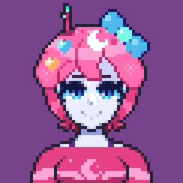
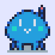
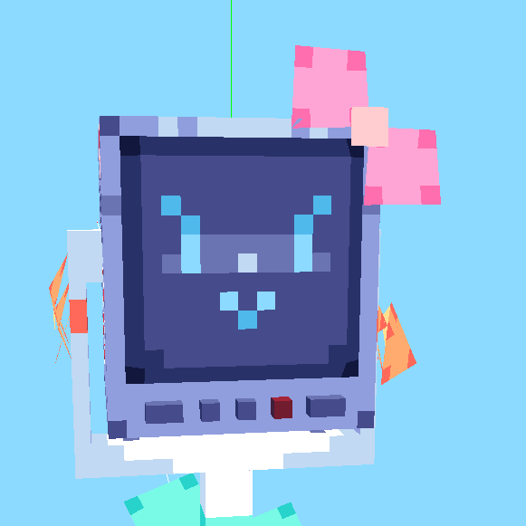
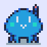
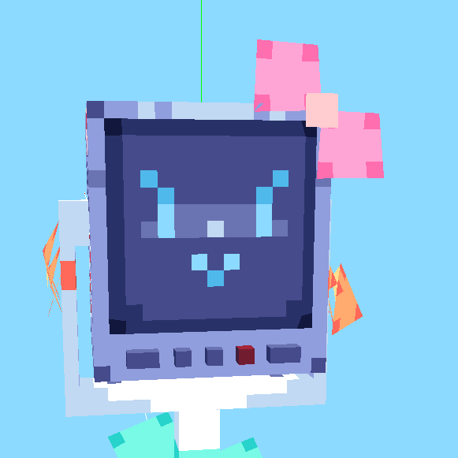
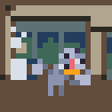
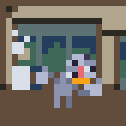

welcome to the unit log...
the unit profiles are to help with drawing, or learning about the units within the Mother1brain.
note this page is work in progress also
Original Characters
 

 



Alt Designs
 
